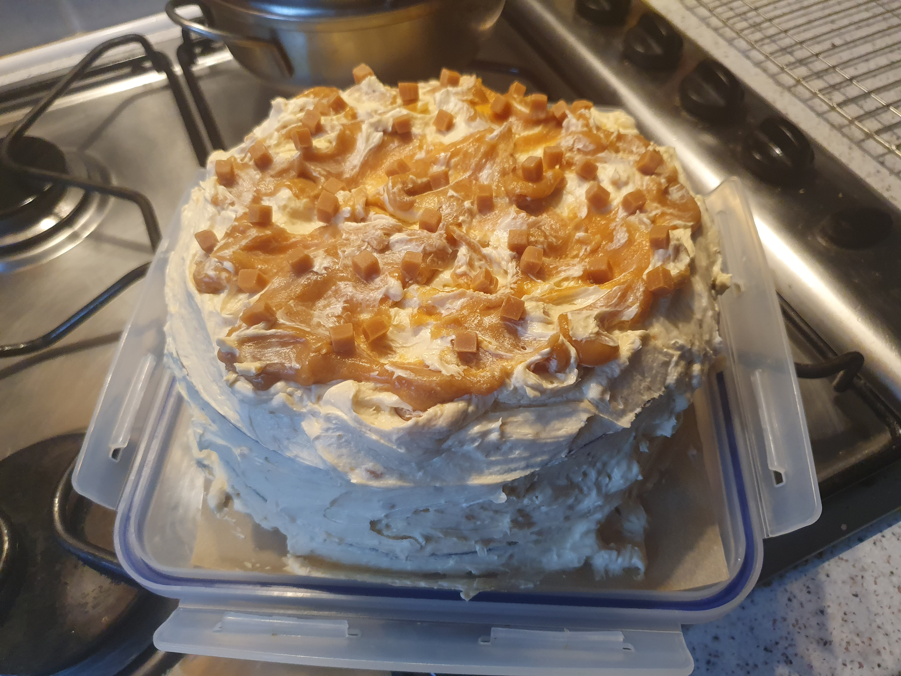
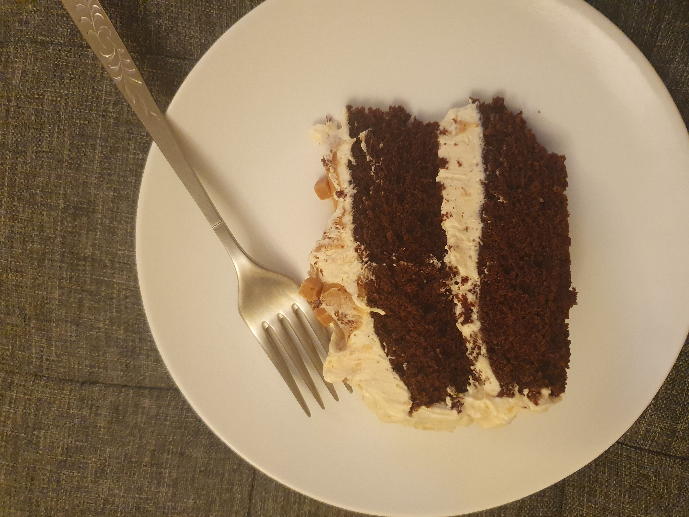
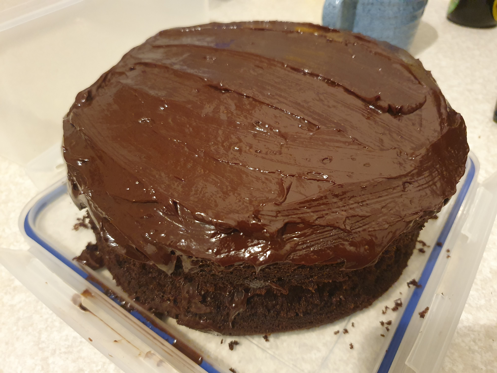
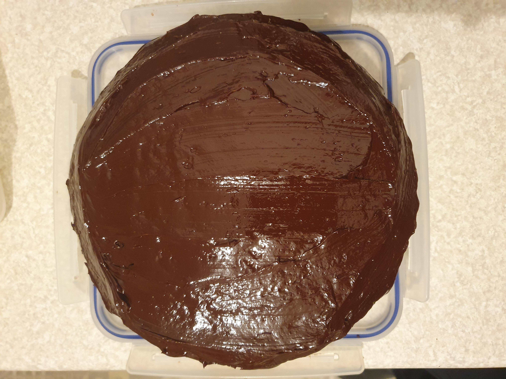

Cakes
Apple crumble cake
300g apples
100ml oil
175g light brown sugar
0.5tbsp apple cider vinegar
1/2 tbsp vanilla
240ml milk
250g plain flour
2 tsp cinnamon
0.5tsp ground cardamom
0.75 tsp BofS
1.5 tsp BP
Topping:
56g plain flour
31g sugar
44g butter
160°
45-50mins
8” round
Method
- Make crumble topping and set aside.
- Cut apples into small pieces, about 0.75cm.
- Combine oil, vinegar and vanilla.
- Gradually mix in sugar.
- Add in milk and combine.
- Sift dry over wet in 2-3 batches.
- Stir in apples, top with crumble and bake.
Banana loaf
3-4 (~11.5oz) bananas
3.5oz light brown sugar
10.5oz SR flour
3.5oz sultanas
1.75oz walnuts
1tsp mixed spice
1tsp BP
5floz oil
160°
55-60mins
Loaf
Notes
- Used to make at B&B.
Carrot cake
6oz marg
6oz light brown sugar
3 eggs
4oz carrot
2oz raisins
2oz dates
1/2tsp cinnamon
1/4tsp nutmeg
1oz coconut
1oz walnuts
6oz wholemeal flour
pinch salt
1tsp BP
180°
90mins
8” round
Notes
- For vegan option, replace eggs with 7.5oz apple puree and 1/2tsp BP, but may need to cover with foil during bake.
Chocolate and caramel cake
47.5g cocoa
120g light brown sugar
1tsp vanilla
87.5ml just boiled water
210g P flour
1/2 tsp BP
1/2 tsp B of S
125g butter
140 sugar
2 eggs
Filling:
150g sugar
150ml double cream
1/2 tsp vanilla
1tsp sea salt
Topping:
110g egg white (<3 eggs)
160g sugar
235g butter
160°
20-25mins
2 x 8” round
Method
- Whisk cocoa, sugar, vanilla and water until smooth and leave cool 5 mins.
- Cream butter and sugar, 3-5 mins, then beat in eggs 1 at a time.
- Fold in dry 1/3 at a time, then cooled cocoa mixture.
- Bake.
- For caramel, sugar and 6tbsp water in saucepan over medium heat, cook 6-8 mins no stirring, until starts to turn deep amber.
- Remove from heat and place in bowl cold water.
- Slowly whisk in cream and vanilla -> thick pouring consistency (can stir over heat if necessary).
- Stir in salt and leave to cool.
- For buttercream, whisk egg whites and sugar until smooth.
- Place over pan of simmering water for 5mins, whisking occasionally until sugar dissolves - feels smooth, not grainy between fingertips.
- Whisk about 7mins to stiff peaks.
- Add butter and whisk about 5mins, until smooth and glossy - don’t panic if appears to curdle, just keep whisking.
- Add vanilla and 5 tbsp cooled caramel, 1tbsp at a time and mix until smooth.
Notes
- Not too chocolately or too sweet.
- Buttercream very smooth and silky. Could do with less buttercream.
- Caramel sauce did not work as stated - hard lumps of sugar and had to heat slowly to get mix with cream - next time would not dunk in cold water, but would add warm cream instead.


Chocolate and sweet potato loaf
250 boiled sweet potato
100g plain chocolate
125 marg
150g light brown sugar
2 eggs
175g SR flour
1/2 tsp BP
75g chocolate chips
Topping:
100g plain chocolate
25g marg
2tbsp syrup
25g chocolate chips
160°
50-60mins
Loaf
Method
- Mash potato and chocolate together first.
Chocolate cake
400g caster sugar
100g cocoa
300g P flour
2tsp B of S
1tsp salt
500ml boiling water
125ml oil
1tbsp apple cider vinegar
180°
20-25mins
2 x 8” round
Method
- Mix dry together.
- Quickly add wet.
Notes
- 1.25 mix makes large 9” cake.
Devil’s food cake
2oz cocoa
6floz boiling water
6oz marg
12oz dark brown sugar
3 eggs
10oz P flour
3/2tsp B of S
1/4 tsp BP
4floz soured cream/buttermilk
180°
30-35mins
9” round
Method
- Mix and cool cocoa and water.
- Cream marg, sugar and eggs.
- Sift dry twice.
- Add dry to creamed in 3 batches, alternating with dairy.
Notes
- Comes out a tall 2x8”, think would be better to have 3x8”.
- 150g cream/choc was enough ganache to fill and top 2x8”, but not sides.


Ginger cake
8oz SR flour
1/2tsp B of S
2tsp ginger
1/2tsp cinnamon
1/4 pt milk
4oz marg
4tbsp treacle
4oz dark brown sugar
2 eggs
180°
45mins
8” round
Method
- Melt milk, marg, treacle, sugar.
Ginger cake
350g P flour
225g dark brown sugar
2-3tsp ginger
1tsp BP
1/2tsp B of S
pinch salt
1/2tsp cinammon
1/2tsp allspice
100ml oil
225ml water
4tbsp (~60g) treacle
180°
35-40mins
8” square
Notes
- Freezes ok.
Kladdkaka
150ml aquafaba
180g sugar
150g P flour
40g cocoa
2tsp BP
1/4tsp salt
100ml oil
icing sugar
200°
15-20mins
8” round
Method
- Whisk aquafaba and sugar to white and fluffy (~5min, speed 4).
- Combine dry ingredients, then gently fold in aquafaba mix.
- Add oil and stir to smooth.
- Bake until edges are firm and dry to touch, middle will be wet.
- Cool in tin, dust.
Notes
- Recipe said 13-15mins, but gave it 20. Could maybe have had a couple longer whilst still being fudgy in middle, but unsure, maybe oven not right temperature.
Lemon cake
295ml milk
10ml apple cider vinegar
120ml aquafaba
115g butter
20ml oil
300g sugar
1 tbsp lemon zest
1 tbsp lemon extract
1dsp vanilla
350g P flour
12g baking powder
3g salt
turmeric
175°
?mins
2 x 8” round
Method
- Combine milk and vinegar and sit aside for buttermilk.
- Mix aquafaba 1-2 mins high speed into light and foamy and set aside.
- Beat butter, oil, sugar and lemon zest 3 mins until light and fluffy.
- Mix in buttermilk and aquafaba.
- Fold in rest, do not overmix.
Notes
- Paired with buttercream with lemon zest.
Loaves
5oz marg
5oz caster
2eggs
7oz SR flour
3tbs milk
180°
60mins
Loaf
Notes
- For Cherry & Almond add 4oz cherries and 2oz ground almond.
- For Lemon Drizzle add zest 2 lemons and use 4tbsp (juice and caster sugar) to drizzle.
Marbled chocolate and orange
8oz mix
1tsp BP
zest 1-2 oranges
4tsp orange juice
2tbsp cocoa
4oz plain choc (melted)
180°
75mins
8” round
Raspberry and almond cake
4oz SR flour
2oz ground almonds
5oz caster sugar
2eggs
4floz (5oz) yoghurt
4floz oil
1tsp vanilla/almond
5oz raspberries
flaked almonds, for topping
170°
50-60mins
8” round
Method
- Whisk eggs, yoghurt, oil, essence.
Raspberry and white chocolate cake
8oz mix
100g white chocolate
175 raspberries
Filling:
200g white chocolate
250ml double cream
160°
20-25mins
2 x 8” round
Method
- Melt butter and chocolate together, cool 2mins.
- Beat in eggs and sugar.
- Fold in flour and raspberries.
Notes
- Sweet.
- Raspberries sunk, but maybe because cooked as one big cake.
- Used oat cream for ganache, which was more like pouring cream, but still worked.
Victoria cake
8oz mix
1tsp BP
180°
25-30mins
2 x 8” round
Notes
- Or makes 20 fairy cakes or 16 cupcakes.
- Buttercream